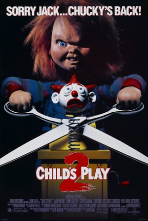

Child's Play is set in 1988. A serial killer and voodoo practitioner named Charles Lee "Chucky" Ray is mortally wounded and transfers his soul via a voodoo ritual into a child-sized "Good Guys" doll. The doll is found by a homeless peddler and sold to Karen Barclay, who gives it to her son Andy as a birthday gift. As time goes on Chucky has to get his soul out of the doll before it turns human and the transfer becomes permanent, and thus has to possess the first person he told his secret to, Andy. Desperate to leave his doll body, Chucky terrorizes the Barclays in order to restore his soul.
Child's Play 2 is the second film in the series. The movie takes place in 1990, two years after the events of the first film. While Andy is living in foster care, the doll's manufacturer has taken a positive corporate stance and remade it to prove there is nothing wrong with the Good Guys brand. After a freak electrical malfunction brings Chucky back to life in a new Good Guys doll, he continues to follow Andy in order to transfer his soul from his doll body before it will once again become his permanent form.
Child's Play 3 is the third film in the series. The film was released on August 20, 1991. Set in 1998, eight years after the events of the second film, the Good Guys factory has re-opened after the negative publicity, and as Chucky's remains are removed, some blood from his destroyed human-doll body drips into a vat of melted plastic used to re-mould the Good Guys line. Chucky returns in a new body, going on a hunt for the now 16-year-old Andy Barclay, who has left to attend a military academy after the results of the first two films. While attempting to reach Andy, Chucky finds a new boy, Ronald Tyler, who he shares his "secret" with. With a new "Good Guys" doll body brings the possibility of possessing a new human body, and Chucky attempts to restore his soul to human form through Tyler as Andy attempts to stop the killer Good Guys doll once and for all.
The film picks up a month after the events of Child's Play 3. Unlike the first three films, this film focuses entirely on Chucky and Tiffany. Charles Lee Ray's former girlfriend and his accomplice, Tiffany, acquires Chucky's remains, stitches them together and via a voodoo ritual revives Charles Lee Ray, albeit in a much different form. Chucky kills Tiffany, transferring her soul into a bride doll, and the two maniacs force a young couple, Jesse and Jade (Nick Stabile and Katherine Heigl), to bring them to Ray's grave, where Chucky plans to use a voodoo amulet to finally get a new body. In the end, the Tiffany doll gives birth to a new form of life (Glen/Glenda) as it flies out of a now dead Tiffany and attacks a detective. No one knows whether the detective is dead or alive as the screen cuts to black and closing credits roll.
Seed of Chucky is the fifth installment. Chucky and Tiffany's child Glen finds his parents six years later, in 2004, and brings them back to life, but is horrified by their murders. Chucky and Tiffany force a pregnancy on actress Jennifer Tilly, which is accelerated by voodoo magic. Glen suffers a split personality disorder, having both a male and female soul in his/her body, and dismembers his father. Tiffany uses the ritual to take over Tilly's body and as Tilly bears twins, Glen's dual personality now has a body each of its own. In an epilogue set five years later, in 2009, one of Chucky's severed arms is mailed to the home of his family, where it attacks the now-human Glen.
In 2013, nine years after the events of the fifth film and four years after its epilogue, Chucky is delivered to the family home of Nica and Sarah Pierce, where Chucky terrorizes and kills the family one by one. Chucky is driven by revenge, as Sarah was the one who called the police on him while he was still human, leading to his original death in the first film by detective Mike Norris and responsible for Nica's disability. Nica survives, but is institutionalized, and blamed for the murders. Chucky is collected by Tiffany, who delivers him to Alice. Chucky successfully transfers his soul into Alice's body which will be explained in Cult of Chucky, as he does the soul ritual the camera moves to reveal Alice's grandmother emerging from the basement, with a plastic bag around her head, slowly dying. Six months later, Chucky is mailed to his next victim, who just so happens to be none other than his longtime original nemesis from the original first three films, Andy Barclay, who points a shotgun at Chucky and shoots him through the head.
The seventh installment in the franchise, it is set in 2017, four years after Curse of Chucky, Chucky returns to terrorize Nica at the mental institution where she is admitted. Chucky goes on yet another murderous rampage, killing disbelieving employees and tenants at the institution with various dramatic tricks. When a now vigilante Andy Barclay figures out Chucky's plan, he breaks into the institution in an attempt to disarm his newly created voodoo plot. But in the end, Nica ends up being possessed by Chucky, which causes her to gain the ability to walk and leaves with Tiffany.